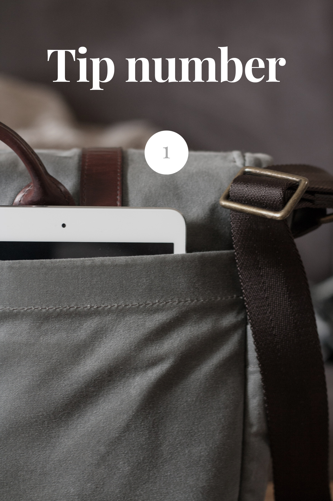
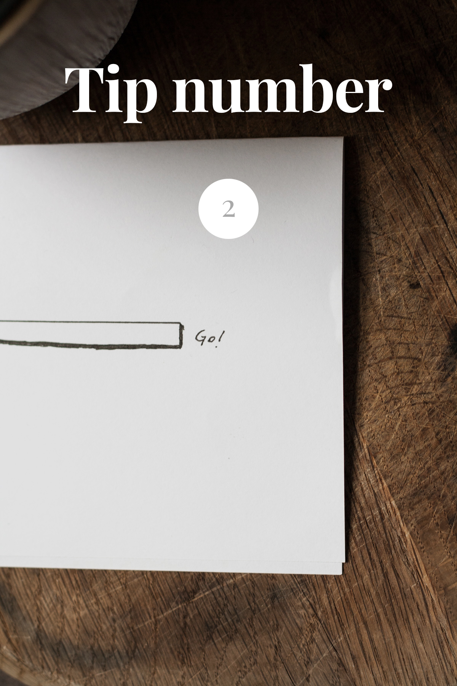
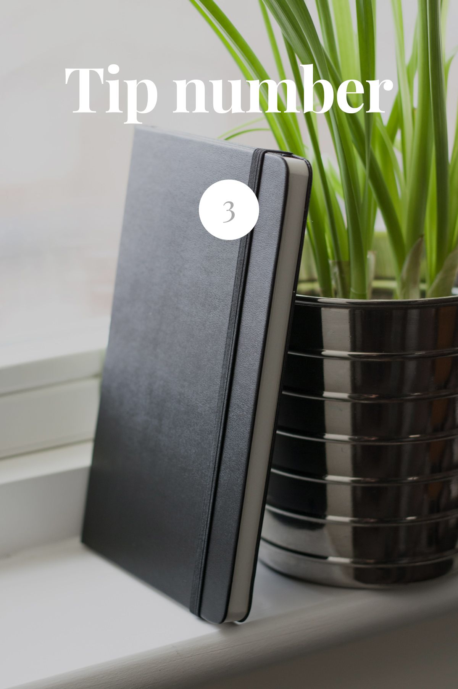

Three ways to keep a sketchbook
3 min readSketchbook is a series to encourage a solid foundation for any creative project. It was made to mark the launch of this website, with a noteworthy prize at the end. Share and let me know for a chance to win!
You’ve got a sketchbook, you’ve seen how I use it, and you’re hungry to do it yourself — awesome! I’ll cover some tips and resources I enjoy using. Let me know if I missed out something important.

Make it easy
You know how it’s easier to eat fruit if there’s a bowl of ready cut fruit in front of you? Sketching is the same way. Keep it close, keep it available and always have a pen within reach. Sketching out ideas will eventually become easier than not doing so. You’ll appreciate doing this in the long run.

Be hungry
Cliché, I know, but be hungry for knowledge. What I mean by that is that even if you get to a point where you can make great stuff with ease, you shouldn’t stop learning. In terms of your sketchbook, that basically means you can look back through the pages and see tremendous amounts of progression over the years.

Inspire and be inspired
Unexpected inspiration is often the reason I start on projects. I might think I can do something better than the source or I’d just like to include a particular design piece from it in my own project. Either way, it’s kickstarting new projects. Insipiration can come from anything, so go watch some old films, read a book or browse through photos from an unknown photographer. Here’s a couple of websites I find useful:
MindSparkle Magazine
MindSparkle Magazine is essentially inspiration from other websites — it’s obviously a very subjective list, but it’s a breath of fresh air from Awwwards and the likes.
Dribbbleboard
You can hate it or love it, but it’s undeniably inspiring. Dribbbleboard compiles all the popular shots into one long, continious feed for you to scroll through daily. A great source of inspiration in my opinion.
Psiu Puxa
Pictures from space. I think they’re beautiful, and they fuel creativity.
Medium
I prefer books, but Medium is almost as good. I use it to discover stories and get lost in people’s adventures.
Vimeo
Vimeo’s staff picks and channels like Lynda are great sources of pretty much everything. For example, Evan Cheng’s character design and 30 minute drawings:
Thank you
I don’t think it’s important to find the latest and greatest trends — but rather the inspiration to start new trends. I mentioned nothing but websites though, so feel free to ask me about books and films as well.
I wanted to keep this short and sweet, and I think it’s a nice way to wrap up the sketchbook series. Thank you for tagging along, and I sincerely hope you found some of it useful!
Feel free to share the sketchbook series for a chance to win yourself the notebook in the last picture. Thank you for stopping by.